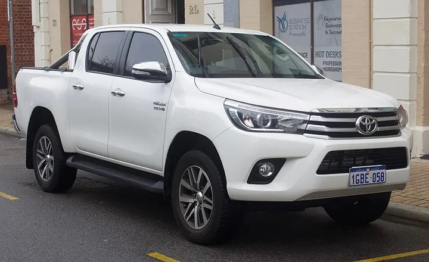
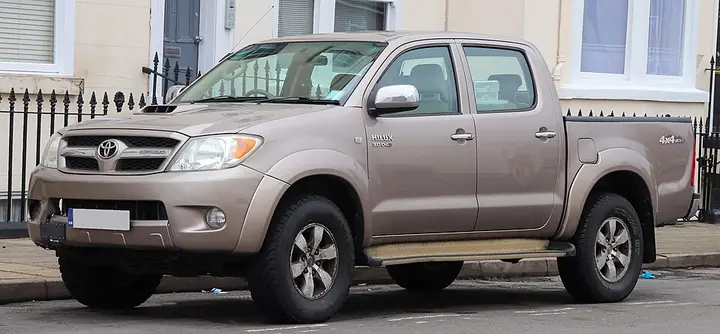
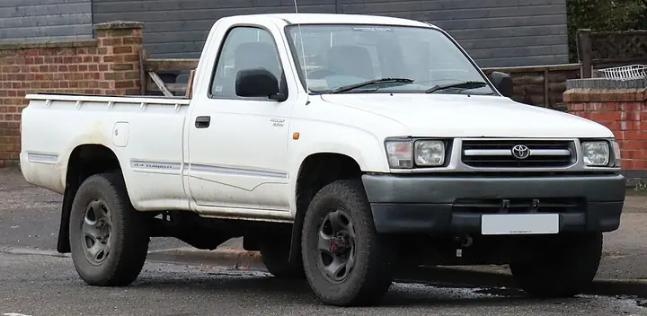
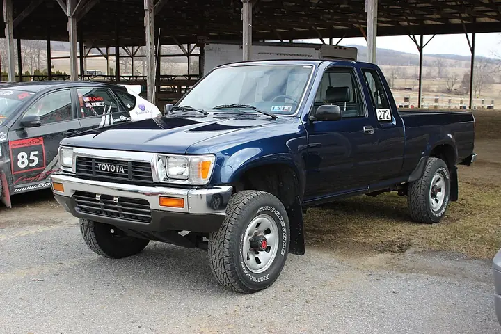
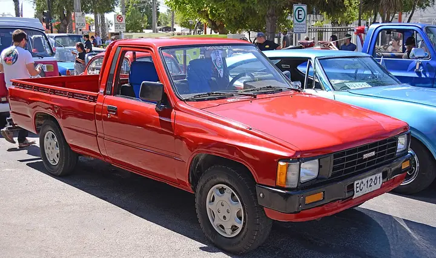
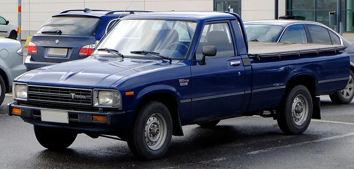
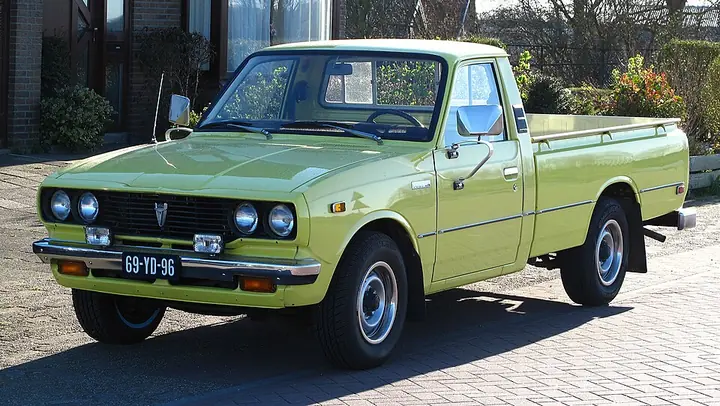
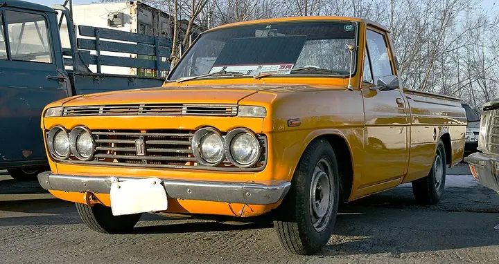

Toyota Hilux
Ninth generation (AN220, AN230; 2025) · 2025–present
Abstract
This generation of the Toyota Hilux was built 2025–present in Thailand: Ban Pho; Samrong Tai (TMT), South Africa: Prospecton (TSAM), Cambodia: Phnom Penh (TTMC) and other plants. Body styles: 2-door pickup truck, 4-door pickup truck. Layout: Front-engine, rear-wheel-drive. Designed by Nicolas Hogios.


1Specifications
| Production | 2025–present |
|---|---|
| Assembly | Thailand: Ban Pho; Samrong Tai (TMT)South Africa: Prospecton (TSAM)Cambodia: Phnom Penh (TTMC)India: Bidadi (TKM) |
| Designer | Nicolas Hogios |
| Body style | 2-door pickup truck4-door pickup truck |
| Layout | Front-engine, rear-wheel-driveFront-engine, four-wheel-driveDual-motor, all-wheel-drive (BEV/Travo-e) |
| Platform | Toyota IMV |
| Engine | Petrol:2.7 L 2TR-FE I44.0 L 1GR-FE V6Diesel:2.4 L 2GD-FTV turbo I42.8 L 1GD-FTV turbo I4 |
| Electric motor | 2x permanent magnet synchronous |
| Transmission | 6-speed RC60/RC61 manual6-speed AC60 "Super Intelligent ECT" automatic |
| Battery | 59.2-kWh lithium-ion (BEV/Travo-e) |
| Range | 240 km (BEV/Travo-e, WLTP)300 km (BEV/Travo-e, NEDC) |
| Wheelbase | 3085 mm (long-wheelbase) |
| Length | 5320 mm (long-wheelbase) |
| Width | 1855 mm |
| Height | 1685–1815 mm1800 mm (BEV/Travo-e) |
| Weight | 2140–2190 kg |
| Related | Toyota Hilux ChampToyota Land Cruiser FJ |
2Previous generations

_SR5_4-door_utility_(2018-09-03)_01.jpg){kind=link}







.jpg){kind=link}

.JPG){kind=link}

.jpg){kind=link}


3Generation by generation
Length +26% from the first to the last
N10 19684,215 mm
N20 19724,275 mm
N30 19784,300 mm
N50 19834,435 mm
N80 19884,430 mm
N140 19974,650 mm
AN10 20044,980 mm
AN110 20155,320 mm
AN220 20255,320 mm
Weight +128% from the first to the last
N10 1968940 kg
N20 19721,075 kg
N30 19781,050 kg
N50 19831,045 kg
N80 19881,140 kg
N140 19971,270 kg
AN10 20041,450 kg
AN110 20151,495 kg
AN220 20252,140 kg